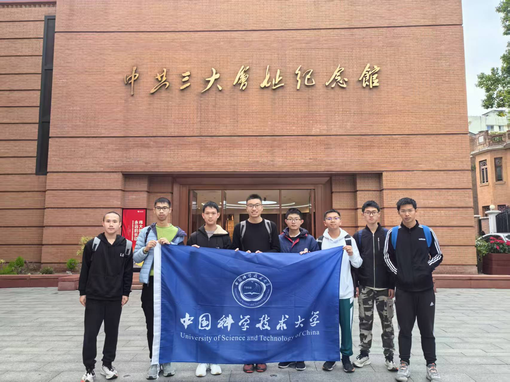

Last update : 2026/6/25; Status: editing, @updating, final
摘要
本报告为“广东党史教育实践团”（中国科大2025年“返家乡”社会实践71组）在中共三大 会址纪念馆的考察调研报告。首先，我们介绍了考察的前期准备，包括团队分工及考察主题确定。随 后，报告分享了组员们对广州近代史和党史的前期调查收集成果。接着，我们在报告中呈现了考察中 共三大会址纪念馆的具体过程和收获。此外，我们不但分析了中共三大召开的来龙去脉，还加入了组 员总结对此次考察实践的总结和心得。我们深入讨论了党的代表大会的发展历程，并探讨了中国共 产党统一战线的发展史。总体上，本报告是对我组从活动筹备策划到实施再到分享讨论等全过程的 呈现，体现了我们组为此次活动所做的工作和收获。
This report presents the findings of our group (Group 71 of the 2025 ”Returning to Hometown” Social Practice of the University of Science and Technology of China), based on a field investigation conducted at the Memorial Hall of the site of the Third National Congress of the Communist Party of China (CPC). The report begins by outlining the preparatory work for the investigation, including the division of tasks within the team and the determination of the theme. It then shares the results of preliminary research and data collection conducted by the group members on the modern history of Guangzhou and the history of the Party. Moreover, the report incorporates a summary of reflections and insights from the team members regarding the investigation. The development of the Party’s congresses is discussed in-depth, alongside an exploration of the history of the CPC’s united front. Overall, this report provides a comprehensive presentation of our group’s efforts throughout the entire process.

引言
为深入学习贯彻习近平新时代中国特色社会主义思想，认真落实习近平总书记关于青年工作 的重要思想，坚持“受教育、长才干、作贡献”的宗旨，按照团中央、团省委统一规划部署，我 们来到中共三大会址纪念馆与广州近代史博物馆开展2025年寒假“返家乡”社会实践活动，深入 学习了解了广州这座英雄城市的光荣历史，探究中共三大的历史背景与历史意义。这次的社会实 践活动让我们感悟到了共产党先驱勇于实践、勇于探索的开拓精神和团结一致的统战精神，对我 们党的光辉历程有了更深刻的认识。
返家乡社会实践71小组实践活动第一次筹备会议于2024年12月21日召开，全体成员与 会。会上，大家首先就考察地点的选择进行了讨论。考虑到广州红色记忆革命遗址众多，我们协 商后认为中共三大会址纪念馆作为中国共产党早期历史的重要见证地，具有极高的教育意义和考 察价值。
在确定以参观考察中共三大会址纪念馆作为本次返家乡社会实践活动的主题后，组员一致同 意实践活动为以“探寻三大足迹，感悟建党初心”为主题，以实地考察和讨论分享会为主要形式 的党史教育分享实践活动，并将我组命名为“广东党史教育实践团”。除此之外，为了加深组员们 对广州近代史特别是党史的认识，真正走进家乡寻访红色足迹，我们决定择日前往广州近代史博 物馆参观。
本次会议还确定了考察全过程的分工事宜。
- 李乐轩负责听取会议上各组员意见并为考察活动撰写策划案；
- 黄祺顺在活动前与纪念馆方面取得联系，以便组员在当地顺利进行考察活动；
- 韦晏洲负责活动期间的人员召集和带队工作；王有晟、马靖伦等人为实践报告准备照片及部分文字素材；
- 全体组员合作完成实践报告各部分内容；
- 黄祺顺负责此次活动的新闻稿撰写和全体组员心得体会及实践报告审查工作；
- 李冰宰负责本次活动的整体规划部署并确保各环节落实。
考察过程
12 月 23 日上午，我们来到达了中共三大会址纪念馆。在纪念馆工作人员的讲解和指引下有 序地进入了展厅开始考察。展厅内，一件件珍贵的文物、一幅幅生动的历史照片，将我们带回了 那个风雨飘摇的年代。我们认真聆听工作人员的讲解，仔细观看展品，不时地记录下自己的感受 和体会。通过实地考察，我们深刻感受到了中国共产党早期奋斗的艰辛和不易，也更加坚定了我 们为党和人民事业贡献力量的决心。次日，我们来到广州近代史博物馆进行参观学习。
考察结束后，我们团队进行了深入的讨论和交流。大家纷纷表示，通过此次考察，自己对中 国共产党的历史有了更加深入的了解和认识。同时，我们也就如何将考察成果转化为实际行动进 行了探讨，提出了许多宝贵的意见和建议。25日下午，实践善后工作启动。黄祺顺牵头组织组员 为本次活动撰写新闻稿，并为实践报告的撰写做具体安排。在大家的共同努力下，本次实践活动 圆满完成。
中共三大的历史背景
在进行参观前，组员先行对广州近代史特别是党史进行学习了解，尤其重视中共三大召开的 历史背景。经过组员的调查整理并结合我们在广州近代史博物馆的学习收获，本小节将展现我们 对中共三大历史背景的考察成果。
一大和二大1
1921 年 7 月，中国共产党第一次全国代表大会在上海召开。党的一大召开是中国近代史上开 天辟地的大事件，全国各地代表齐聚一堂商议建党事宜。广州共产党小组派出陈公博为代表赴会。 会后，陈公博依照中共一大的要求和精神，决定基于广州共产党小组这个广州本土的共产主义组 织成立中国共产党广东支部。 1922 年 7 月，中共“二大”提出反帝反封建的革命纲领。
广州的共产党早期组织2
五四运动爆发，上海迅速成为五四运动的中心。作为当时中国工业和工人高度集聚的地方，上 海迅速成为工人运动的“主阵地”，五四运动也意味着工人阶级这个最革命的阶级登上了历史舞 台。1920 年 8 月，上海共产主义小组建立，这是中国历史上首个共产党组织。随后，其书记陈独 秀到达广州进行筹建广州党组织的活动。陈独秀与谭平山等人商议，取得了一致的意见，于1921 年3月正式成立了广州共产党小组这个真正的共产党组织。
中共三大之前的革命路程概述
党的第一次全国代表大会后，1921年8月，成立了中国劳动组合书记部（即中国工会办事处） 在沪成立。广州成立了南方分部（后改为广东分部），作为党公开领导工人运动的机关1。
在南方分部的领导下，广州地区的工人组织进一步建立起来。1921年10月至12月，广州数 个行业先后发生了工人罢工，要求增加工资取得胜利。1922年初，震惊中外的香港海员大罢工爆 发，中国劳动组合书记部对这次海员大罢工给予了高度肯定和大力支持。海员大罢工的得胜强而 有力地打击了国外帝国主义势力的嚣张气焰，振奋了广大工人群众。中国人民见识到了工人阶级 雄厚的力量。在海员大罢工的推动下，广州工人阶级纷纷通过革命手段捍卫无产阶级利益。正因 此，广州站在了工人运动的前列。
为了加强对不断发展壮大的工人运动的领导并组织好工人群体的政治力量，中共中央在广州 召开了第一次全国劳动大会。这次大会上共产党早先提出“打倒帝国主义”“打倒封建军阀”的口 号被广泛接受，成为广大劳动者为民主革命奋斗的目标。
中共三大筹备
承前启后
党的二大后，工人运动继续高涨。早期工人运动体现出如下特征：
- 一开始，罢工主要是为增加工资、改善待遇，属于经济斗争范畴，但工人并未意识到资产阶 级掠夺劳动者果实的秘密。经过马克思主义的广泛传播和共产党组织积极向广大工人传授马 克思主义特别是其劳动价值论的思想，工人阶级不再满足于资产阶级的妥协，而是要推翻资 本主义的压迫。饱受资产阶级压迫的工人开始意识到要改变现状，为自由和民主权利而努力 斗争，愈发团结在共产党反帝反封建反军阀的旗帜下共同奋斗。
- 有了马克思主义的理论武器，有了中国共产党的坚强领导，中国工人的越发组织起来团结一 致，地方总工会、产业总工会陆续成立，协调着工人运动不断推进。得益于先进的共产党和 不断觉悟的工人阶级，工人阶级日渐成长成为一股极为重要的政治力量。
局势变化
国内政治形势风起云涌
20世纪20年代初，国内买办阶级受帝国主义势力和封建残余裹挟，不 断军阀割据、拥兵自重，导致中国处于四分五裂的状态。中国共产党在二大上确立了“联合全国 革新党派，组织民主的联合战线”的方针，但由于京汉铁路大罢工的失败，工人阶级的力量显得 薄弱，中国共产党意识到需要寻求同盟者来共同推翻帝国主义和封建军阀的统治。
共产国际对共产党的影响
根据马林的建议，共产提出《关于中国共产党与国民党的关系问题的 决议》，判断认为中国工人阶级还不足以成为独立的社会力量，又建议中国共产党与所谓“国民党 这个唯一的国民革命集团”合作。这一定程度上体现共产国际在指挥国际共产主义运动时考察不 完善，考虑不充分的一面。
中共三大的经过
中共三大（1923 年）是中国共产党历史上的一个重要会议，主要内容涉及党的革命策略、国 共合作和工农问题。中共三大对国共合作的可行性，形式和方法等进行了讨论，认为共产党能够 借助国民党的革命力量，推动民主革命，广泛动员群众，增强党的影响力，并在工农问题上进行 逐步探索。此外，尽管中共三大主要聚焦国民革命，但党内一些同志开始探讨无产阶级在民主革 命中的领导地位，尤其是工人运动的主导作用，为后来的革命理论和实践奠定了基础。大体上讲， 中共三大通过决定国共合作和关注工农问题，解决了当时中国革命中的关键任务，并为共产党在 中国的政治舞台上发展提供了重要契机。
国共合作的背景与争论3
陈独秀、马林等认为中国革命首先要紧的是推进国民革命。共产党和无产阶级目前力量较弱， 还没有形成独立的社会力量，不应急于独立进行社会主义革命，甚至出现了“先国民革命在 社会主义革命”的二次革命论。
张国焘、蔡和森认为共产党不仅要参与国民革命，还要领导工人运动，保持共产党的独立性。 他们反对共产党员，尤其是产业工人加入国民党，担心这样会削弱共产党的独立性，并且让 工人运动被国民党主导。
最终会议接受了共产国际的指示，决定与国民党合作，支持国民革命。具体措施为共产党员 以个人身份加入国民党，并通过合作推动国民革命，同时保持党的政治独立性。这一决定是为了 通过国共合作，集中力量打击帝国主义和封建势力，加速民主革命进程。
党的任务与阶级分析
国民革命的历史任务：陈独秀明确指出，当前中国革命的主要任务是反帝、反封建，进行国 民革命。虽然这一革命本质上是资产阶级性质，但共产党应全力支持这一目标。陈独秀特别 强调农民在国民革命中的重要作用，认为农民是潜在的革命力量。
无产阶级的历史地位：陈独秀虽然提到工人阶级的重要性，但他对工人阶级在革命中的领导 地位有所动摇：他倾向于认为资产阶级在民主革命中占主导地位，提出“二次革命论”，即 先由资产阶级完成民主革命，再由无产阶级进行社会主义革命。
中共三大的结果
通过了《关于国民运动及国民党问题的决议案》（以下简称《决议案》）等决议
《决议案》表明共产党员可以以个人名义加入国民党，以帮助国民党改组为民主联盟，以期建 立革命统一战线；共产党保持在政治上、组织上、思想上的独立性；共产党员加入国民党后要保 存并努力扩大共产党的组织，等等。
明确提出建立国民革命联合战线
建立国民革命联合战线的重大意义
《决议案》明确肯定了中共二大“打倒军阀”和“打倒帝国 主义”等主张的正确性，证认了国民革命宗旨就是在于实现前述几项主张。决议认为，共产党需 要同国民党建立起一个联合的国民革命统一战线，来实现反帝反军阀（本质由帝国主义和封建势 力双联合造成）。这实际上论证了推进国民革命就必须要建立国民革命联合战线，而这正是三大会 址上矗立的那个年代的时代号召。
中国共产党的要致力于国民革命
《决议案》指出，党要围绕国民革命开展工作，以解救中国人 民和中华民族于国外压迫。《决议案》指出，党的使命是以国民革命来解放被压迫的中国民族，更 进而谋世界革命。不忘使命，方得始终。共产党先驱们进一步明确其完成“中心工作”的方法，即 为工人农民做好国民革命的宣传、教育、引导。
关于共产党同国民党实现“党内合作”的方式问题
《决议案》严正表示，共产党员要保持自己 在政治、思想和组织上的独立性，一刻不能忘共产党的革命旗帜。共产党始终能够站稳立场，始 终代表最广大中国人民的共同利益，始终同人民群众一道。团结民主和爱国主义势力，建立统一 战线，是共产党韧性和应变力考验，是十年之后建立抗日民族统一战线的自信，也为是共产党百 年来永葆青春活力的底气。
历史功绩
为第一次国共合作和国民大革命做准备
三大结束后，中国共产党通过党内合作的方式积极推动 国民党改组。1924年，中国国民党一大召开，“联俄、联共、扶助农工”三大政策被提出，一定程 度上体现了国民党在共产党人加入后的新面貌。
中国共产党统线史的开端
中共三大在党的统战史上有着重要的历史地位。其一，它确立的“党 内合作”的形式，将党的工作推往崭新的进程。其二，中共三大开启了第一次国共合作的大门，为 中国民主革命大发展创造了重要的条件。
承前启后、继往开来：中共三大不忘一大二大的革命纲领，也为如何建立国民革命统一战线 做出了优秀的回答。中共三大守可谓住了底线，站稳了脚跟，走对了方向。
历史思考
考察后，组员们就在纪念馆所见所闻发表感想，并就二十世纪初共产党初期的历史进行热烈 讨论，提出了一些大家一致认可的见解。本小节将从“党的代表大会一脉相承”和“中国共产党 统战史发展”两个角度分享组员在考察时收获热烈反响的表述。
党的代表大会一脉相承
共产党作为无产阶级的先锋队，一直是近代以来中国新民主主义革命和后来的社会主义革命 的坚强领导力量。不同时期党的全国代表大会所体现的内容是当时中国社会发展走向和共产党自 身发展情况的缩影。通过与党的一大、二大打通垂直联系，我们认识到党组织的发展壮大和理论 实践武器不断进步是一个连续不可分割的整体。通过了解党的前世今生，我们更能学好理解好党 的光辉历史。
中共一大
党的一大通过了中国共产党纲领。党的纲领明确指出党的根本政治目的是实行社会革 命。党的一大表明我们党从一开始就把实现社会主义、共产主义作为奋斗目标努力奋斗。“只有社 会主义、共产主义才能救中国”——这是共产党的先驱们对中国革命认识的具有划时代意义的伟 大飞跃。
为了让党集中统一领导工人运动有规可依，党一大还通过《关于当前实际工作的决议》对工 人运动如何组织、如何宣传等具体的方面提出具体要求。大会决定党“应采取独立的政策以维护 无产阶级的利益，不同其他党派建立任何联系”。
然而对在中国这种带有很大特殊性的社会条件下，刚刚诞生的中国共产党还不可能认识清楚 是否能够立即实行、如何实行社会主义革命甚至共产主义革命，唯有将马列主义与中国革命具体 实际相结合，才能探索出适合中国国情的民主革命和社会主义革命道路。
中共二大
中共二大实际提出反帝反封建的民主革命纲领（即党的最低纲领）。这是新民主主义同 旧民主主义革命最本质的不同，是中国共产党最革命最先进的体现。《关于“民主的联合战线”的 议决案》要求共产党要改变以往“独来独往”的工作方式，要联合一切革命党派，乃至联合资产 阶级民主派，建立起一个民主的联合战线，等等。这就是党最早提出关于统一战线的思想和主张， 也是我们的战胜强大敌人、夺取革命胜利，从成功走向新的成功重要法宝的溯源。从“直来直去 不拐弯”的直接上马社会主义革命，到先民主革命再社会主义革命，这是党的战略方针的一次重 大转变。
中共三大
“党内合作”的功绩前文已予以讲述，此处不重复。总的来说，党的三大基于形势和 历史的考虑，创造性的回答了如何国共合作这个问题。这既为国民党的改造“提供新鲜血液”，使 原本组织松散的国民党重塑；又有利于共产党走上更宽广的政治舞台，不断锻炼发展。
总结
在短短几年时间内，中国共产党在中国革命中体现出了对其理论认识和实践行动不断进步 的历程。这一历程生动体现了马克思主义的认识论（实践-认识-实践）的逻辑规律。通过不断的实 践探索、理论深化和实践调整，中国共产党逐渐找到了适合中国国情的革命道路，为中国的民族 独立和人民解放事业作出了巨大贡献。
实践到认识的初步探索
实践背景：中国共产党在成立初期，面临着复杂的国内外形势。国 内军阀混战，外有帝国主义侵略，民族矛盾和社会矛盾交织。中共一大通过了中国共产党纲领，明 确提出了实现社会主义、共产主义的奋斗目标。然而，这一认识尚未深刻把握中国国情的特殊性。 由于对中国国情的认识不足，大会要求党集中力量领导工人运动的实践探索具有一定的不客观性。
认识到实践的深化与调整
中共一大后的革命实践中工人运动几起几落，这使得共产党认识 到直接进行社会主义革命在中国当时的社会条件下并不现实。中共二大并突破性地提出了关于统 一战线的思想和主张。这些调整后的实践行动更加符合中国革命的实际情况，为革命力量的壮大 和革命进程的推进奠定了坚实基础。
再实践到再认识的飞跃
中共二大后的革命实践进一步证明了统一战线策略的正确性。然而， 新的政治形势迫使共产党思考如何“团结一切能够团结的力量”，更有效地实现国共合作。“党内 合作”的国共合作方法展示共产党与时俱进，不拘泥于一大二大的成见，不断成熟的成长过程，展 现其灵活务实的宝贵品质。国共合作的实现，极大地推动了民主革命的发展。国共两党的共同努 力，发展了革命力量，加速了民主革命的进程。这一时期的实践行动再次证明了中国共产党理论 认识和实践行动的不断进步。
中国共产党成立几年内，就可以从中国的社会现实出发，制定了符合共产主义和时代要求的 最低纲领与最高纲领；在组织领导工人运动中不断磨砺革命经验；在革命的实践后进一步寻找更 适合中国社会的革命路径。这表明，共产党善于把马克思主义不断中国化时代化，切切实实用科 学的理论科学地为中华民族谋复兴，无愧为了不起的党。
统一战线发展史——全中国国民革命者联合起来
在广州召开的中共三大，是党史上开统战工作先河的会议4。
中国共产党最早提出建立革命统一战线
在近代中国的各种政治力量中，中国共产党最早发出了 建立民族革命统一战线、反抗帝国主义侵略的呼声。
1921 年 11 月，毛泽东在《所希望于劳工会的》中就喊出了“全世界劳动者团结起来！”的口 号。中国社会主义青年团第一次全国代表大会（在广州召开）明确提出：“要达到社会主义的目的， 非全世界无产阶级和被压迫民族共同起来革命不可。”这是最早喊出具有统战思想口号的党团组 织。
1922 年 6 月，中国共产党中央执行委员会发表《中国共产党对于时局的主张》，明确提出：“中 国共产党的方法，是要邀请国民党等⋯⋯各团体开一个联席会议，⋯⋯共同建立一个民主主义的 联合战线⋯⋯”。这个思想在党的二大上经历了一个从中央领导层到全党范围的扩大过程。同时， 将统一战线的建立对象明确指向了孙中山的国民党，堪称统一战线思想的萌芽。1922年7月党的 二大提出“民主的联合战线”的主张，成为全党的意志，从而实现了全党战略方针的重大转变。
统一战线彰显了中华民族的伟大团结精神
统一战线弘扬了中华民族的伟大团结精神。团结奋斗 是中国共产党和中国人民最显著的精神标识，所形成的大团结精神是中华优秀传统文化的重要组 成部分。习近平总书记在文化传承发展座谈会上深刻阐述和概括了中华文明所具有的五个突出特 性，即连续性、创新性、统一性、包容性、和平性，其中连续性、统一性、包容性就体现了大团 结精神。
结语
通过这次参观，我更加深刻地认识到中国共产党是如何在艰难困苦中带领中国人民走向胜利 的。作为新时代的青年，我们要继承和发扬革命先辈的精神，努力学习科学文化知识，为实现中 华民族的伟大复兴贡献自己的力量。是的，我们生活在和平年代，但不能忘记历史，不能忘记那 些为了国家和民族的解放事业而英勇奋斗的革命先辈们。他们用生命和鲜血为我们铺就了通往幸 福的道路，我们有责任、有义务继承他们的遗志，继续为实现中华民族的伟大复兴而努力奋斗。
致谢
本此报告在全体小组成员的团结合作下得以顺利完成。在此我们对全体组员的热情参与和付 出的努力表示深深的感谢，每一位组员的努力汇聚起这次收获颇丰的考察实践。另外，我们由衷 感谢中共三大会址纪念馆的工作人员和讲解员的付出，是他们让我们对家乡的红色历史有了非常 真切可感的体会。最后，感谢中国科大校团委为我们提了一个走进家乡，认识家乡的优良平台。